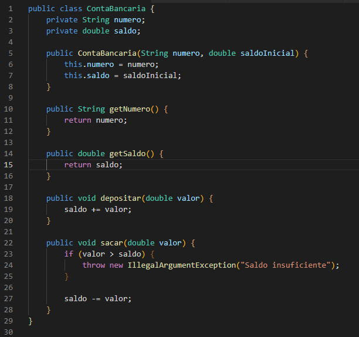
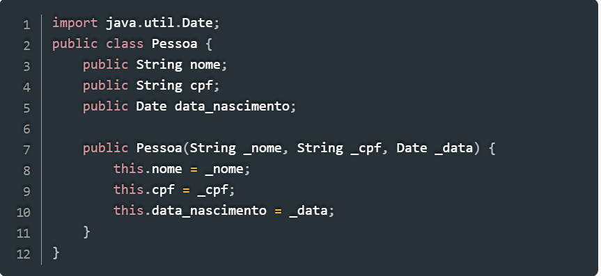
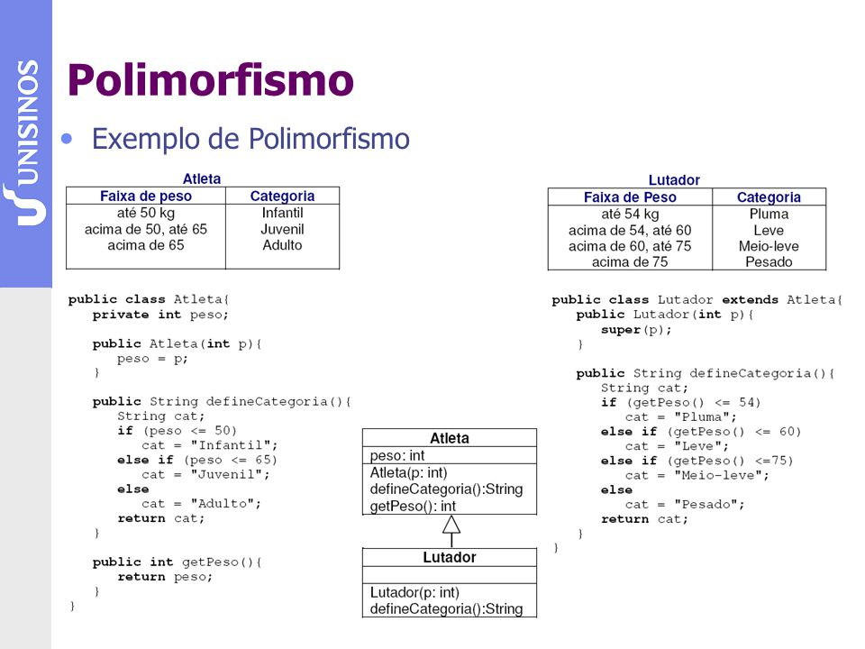
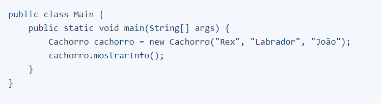

A POO é um modelo de programação baseado na aproximação do mundo real com o mundo virtual por meio da criação e interação entre objetos, atributos, códigos, métodos e vários outros fatores.
Você deve usar encapsulamento sempre que desejar controlar o acesso aos membros de uma classe e proteger os dados contra acesso não autorizado.Imagine como se fosse sua casa, e como seria se outras pessoas, que não são conhecidos, entrassem sem permissão e usassem suas coisas, o encapsulamento limita isso.
A seguir temos um exemplo onde a classe ContaBancaria encapsula os dados de uma conta bancária.
O método "sacar()" verifica se o valor solicitado é maior do que o saldo disponível na conta. Se isso ocorrer, o método lança uma exceção para sinalizar o erro. Isso contribui para entender que o encapsulamento pode ser usado para manter a integridade dos objetos e prevenir erros de programação também.
Possibilita que as classes compartilhem seus atributos ou outros membros de classe entre si. Possuindo dois tipos principais de classe: Classe Base: A classe que concede as características a uma outra classe. Classe Derivada: A classe que herda as características da classe base.
A herança permite que as classes filhas reutilizem o código da classe pai e adicionem novos recursos. A classe filha pode substituir os métodos da classe pai e adicionar novos métodos e variáveis. Por exemplo, uma classe Veiculo pode ser a classe pai, e as classes Carro, Moto e Caminhão podem ser classes filhas.
Exemplo classe pessoa: Onde a classe possui nome, CPF e a data de nascimento como atributos.
Polimorfismo denota uma situação na qual um objeto pode se comportar de maneiras diferentes ao receber uma mensagem.Um mecanismo por meio do qual selecionamos as funcionalidades utilizadas de forma dinâmica por um programa no decorrer de sua execução. Com o Polimorfismo, os mesmos atributos e objetos podem ser utilizados em objetos distintos, porém, com implementações lógicas diferentes.
É uma forma de minimizar a complexidade e tornar o projeto mais eficiente em sistemas de software. Envolvendo a identificação e a modelagem das características e comportamentos essenciais de um objeto, ignorando os detalhes irrelevantes ou secundários para o contexto em questão.em questão.
A abstração é importante por várias razões: Simplificação, Reusabilidade e Manutenibilidade.
Ao criar instâncias de classes concretas e utilizar seus métodos, trabalhamos apenas com os aspectos relevantes definidos na abstração, simplificando assim o desenvolvimento de software.
Onde mostra o exemplo a seguir:
